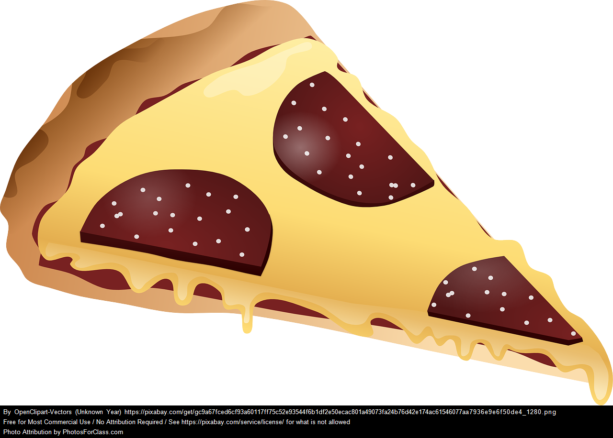

A delicious, homemade pizza
A simple and fast recipe for preparing a tasty tuna pizza for you and your company to enjoy. Bon appetit!
Ingredients:
- 2 dls of water
- 5 dls of flour
- 1 spoonful of baking powder
- 1-2 spoonfuls of salt
- 0.5 dls of melted butter or sunflower oil
- 2-3 cans of tuna (200+grams each)
- 2-300 grams of grated cheese of your choice
- tomato sauce
- mold cheese
- pineapple chunks
Steps:
- Mix the water, flour, salt, oil/butter and baking powder in a bowl.
- Turn your oven to 200 degrees Celsius.
- Spread the pizza dough in the bowl over a baking paper on a baking tray.
- Spread the tomato sauce over the pizza dough evenly.
- Add the cheese evenly over the pizza dough.
- Add the tuna evenly.
- Add the mold cheese and the pineapple chunks.
- Insert the baking tray in the heated up oven
- Remove the baking tray from the oven after 20-25 minutes
- Let the pizza cool down before you dive in. Bon appetit!